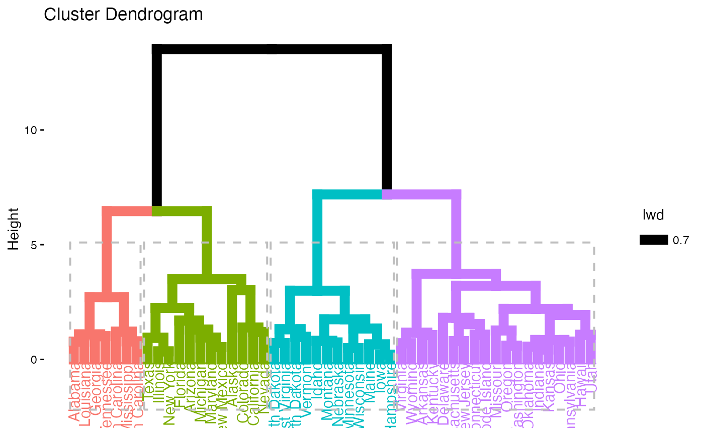
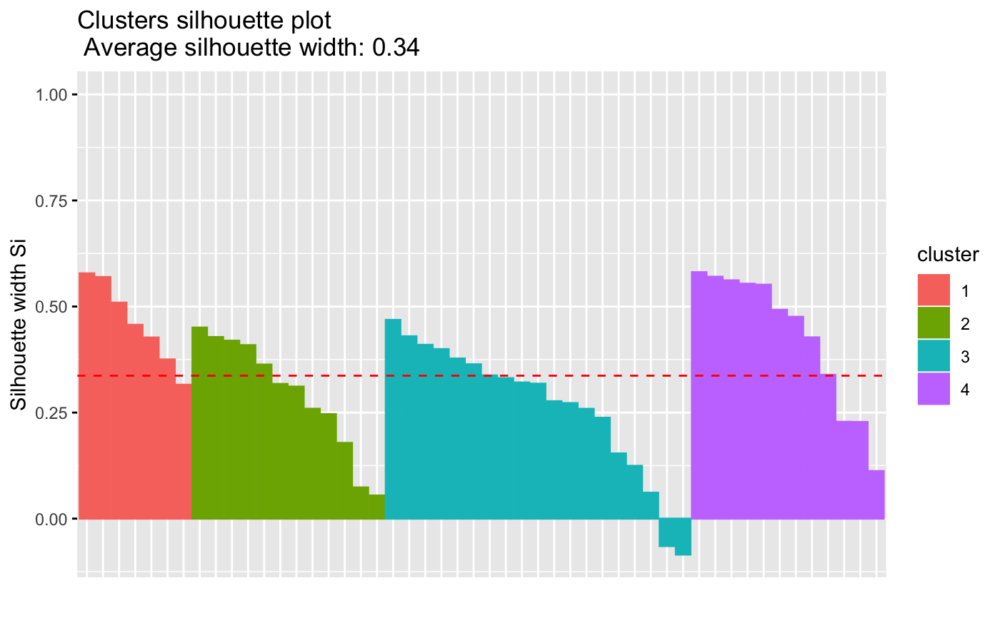
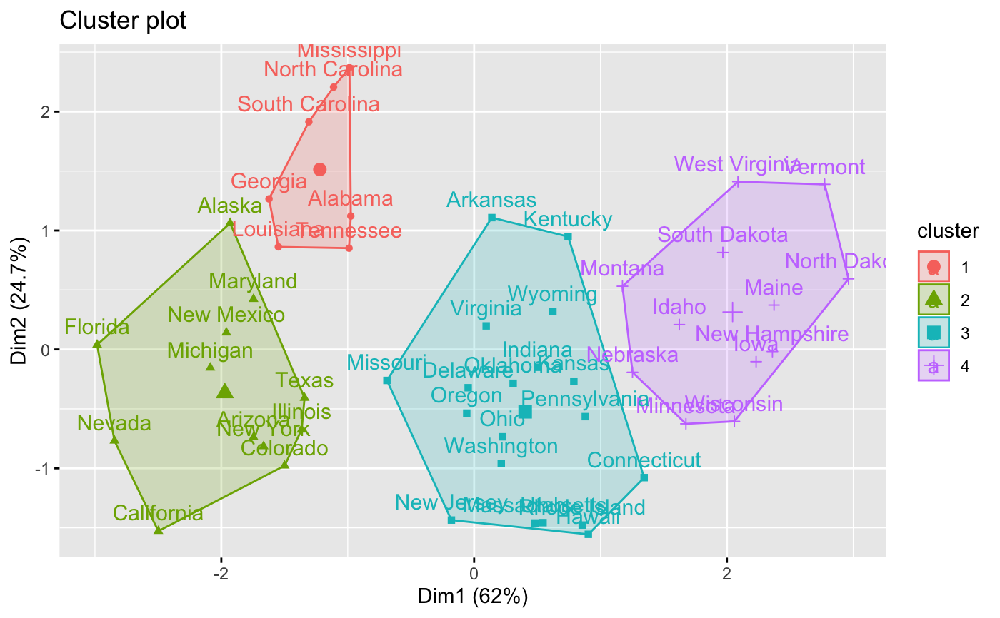

Computes hierarchical clustering (hclust, agnes, diana) and cut the tree into k clusters. It also accepts correlation based distance measure methods such as "pearson", "spearman" and "kendall".
a numeric matrix, numeric data frame or a dissimilarity matrix.
a single integer specifying the number of clusters to be generated. Must be at least 2 and smaller than the number of observations.
logical value specifying whether x is already a
dissimilarity matrix. If TRUE, x must inherit from class
"dist".
the hierarchical clustering function to be used. Default value is "hclust". Possible values is one of "hclust", "agnes", "diana". Abbreviation is allowed.
the agglomeration method to be used (?hclust) for hclust() and agnes(): "ward.D", "ward.D2", "single", "complete", "average", ...
character string specifying the metric to be used for calculating dissimilarities between observations. Allowed values are those accepted by the function dist() [including "euclidean", "manhattan", "maximum", "canberra", "binary", "minkowski"] and correlation based distance measures ["pearson", "spearman" or "kendall"].
logical value; default is FALSE. If TRUE, then the data will be standardized using the function scale(). Measurements are standardized for each variable (column), by subtracting the variable's mean value and dividing by the variable's standard deviation.
logical value. If TRUE, the dendrogram is displayed.
not used.
an object of class "hcut" containing the result of the standard function used (read the documentation of hclust, agnes, diana).
It includes also:
cluster: the cluster assignement of observations after cutting the tree
nbclust: the number of clusters
silinfo: the silhouette information of observations (if k > 1)
size: the size of clusters
data: a matrix containing the original or the standardized data (if stand = TRUE)
# \donttest{
data(USArrests)
# Compute hierarchical clustering and cut into 4 clusters
res <- hcut(USArrests, k = 4, stand = TRUE)
# Cluster assignements of observations
res$cluster
#> Alabama Alaska Arizona Arkansas California
#> 1 2 2 3 2
#> Colorado Connecticut Delaware Florida Georgia
#> 2 3 3 2 1
#> Hawaii Idaho Illinois Indiana Iowa
#> 3 4 2 3 4
#> Kansas Kentucky Louisiana Maine Maryland
#> 3 3 1 4 2
#> Massachusetts Michigan Minnesota Mississippi Missouri
#> 3 2 4 1 3
#> Montana Nebraska Nevada New Hampshire New Jersey
#> 4 4 2 4 3
#> New Mexico New York North Carolina North Dakota Ohio
#> 2 2 1 4 3
#> Oklahoma Oregon Pennsylvania Rhode Island South Carolina
#> 3 3 3 3 1
#> South Dakota Tennessee Texas Utah Vermont
#> 4 1 2 3 4
#> Virginia Washington West Virginia Wisconsin Wyoming
#> 3 3 4 4 3
# Size of clusters
res$size
#> [1] 7 12 19 12
# Visualize the dendrogram
fviz_dend(res, rect = TRUE)

# Visualize the silhouette
fviz_silhouette(res)
#> cluster size ave.sil.width
#> 1 1 7 0.46
#> 2 2 12 0.29
#> 3 3 19 0.26
#> 4 4 12 0.43

# Visualize clusters as scatter plots
fviz_cluster(res)

# }